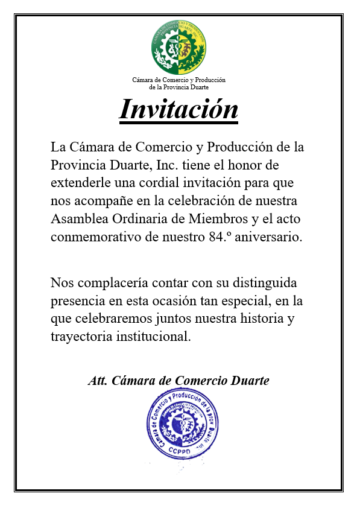

De: Cámara de Comercio y Producción de la Prov. Duarte
Para: Estimado invitado

¿Nos acompaña?
Confirme su asistencia con un clic.
De: Cámara de Comercio y Producción de la Prov. Duarte
Para: Estimado invitado

Confirme su asistencia con un clic.